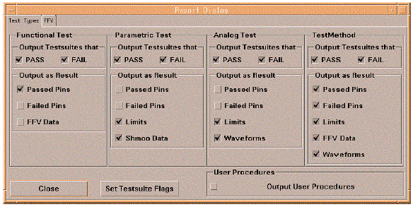

Selecting the Items to be Output
The Report Dialog specifies which test items logged in the data log stream with the TEST and PUT_DATALOG API are added to the report. The Report Dialog can be opened by selecting the "Open Report Dialog" from the "Datalog" menu of the report window. This menu item appears when the "EventFormmter" is selected as a Report Formatter.

The Report Dialog provides the buttons of the "TestMethod" group for specifying which test items of the testmethod are processed with the "EventFormatter".
- PASS/FAIL
Specifies whether the EventFormatter outputs testsuite data for passed, failed,passed and failed. The "PASS" button requires that the testsuite flag output_on_pass is set to "on" and the "FAIL" button requires that the testsuite flag output_on_fail is set to "on".
- Passed pins/Failed pins
Specifies for which pins (passed and/or failed pins) you want result data to be included in the report. These buttons require that the testsuite flag pass_value, fail_value, per_pin_on_pass, per_pin_on_fail are set to "on".
- Limits
Specifies whether adds the limit data which is used with the TEST API to the report.
- FFV Data
Specifies whether adds the first failing vector (FFV) information for the functional test to the report. This button requires that the testsuite flag ffc_enable and ffv_enable are set to "on".
- Waveforms
Specifies whether adds the waveform data which is logged with the PUT_DATALOG API to the report. This button requires that the testsuite flag log_MX_Waveforms is set to "on".
As described above, the buttons in the Report Dialog require the certain testsuite flag or flags are set to "on". For example, the "PASS" button is ignored if the testsuite flag output_on_pass is set to "off". Hence you can set the status of the required testsuite flags by using the "Set Testsuite Flags" button in the Report Dialog. For example, you can override the status of the testsuite flag output_on_pass depending on the status of the "PASS" button of the "TestMethod" group in the Report Dialog. This function affects the all testmethod-based testsuite of the testflow.
For details of the event data logging, refer to the Event Data Logging manual.